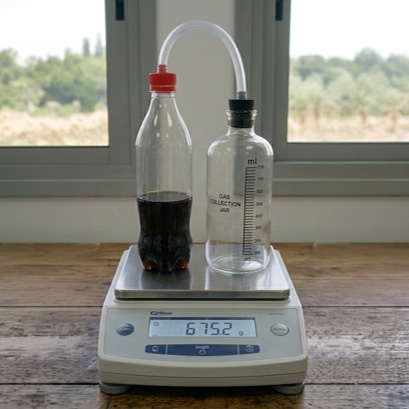
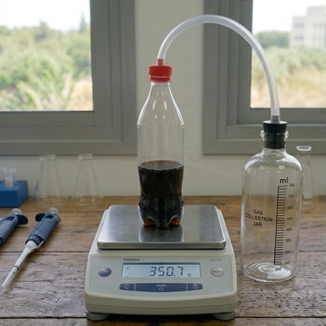

כל הכבוד! הסתיים שלב התרגול.
אם לא הצלחת לענות נכון על חלק מהשאלות, חשוב להבין מה עדיין לא ברור ולפנות לצ'אט או למורה להסבר נוסף.
עכשיו מגיעה שאלת השיא
יש בה ארבעה סעיפים. עליכם להצליח בשלושה לפחות.

תלמידים ותלמידות בשיעור מדעים רצו לבדוק את מסת הגז שנמצא בבקבוק משקה תוסס.
הם בנו מערכת ניסוי:
- בקבוק המשקה חובר בצינורית למיכל איסוף ריק.
- כאשר יפתחו את הבקבוק, הגז יעבור דרך הצינורית ויאסף במיכל.
סעיף א: בניסוי הראשון כל המערכת הייתה על המאזניים. אלה תוצאות השקילה:
לפני פתיחת בקבוק המשקה: 682.4 גרם
אחרי מעבר הגז למיכל האיסוף: 682.4 גרם
יפתח אמר: "כנראה שכמעט לא היה גז במשקה, כי המסה לא השתנתה".
האם יפתח צודק? מהו התיאור המדעי המתאים לתופעה הזו?

תלמידים ותלמידות בשיעור מדעים רצו לבדוק את מסת הגז שנמצא בבקבוק משקה תוסס.
הם בנו מערכת ניסוי:
- בקבוק המשקה חובר בצינורית למיכל איסוף ריק.
- כאשר יפתחו את הבקבוק, הגז יעבור דרך הצינורית ויאסף במיכל.
סעיף ב: בניסוי השני השתמשו בשיטה אחרת - שקילת הבקבוק המלא לפני ואחרי שחרור הגז, כאשר מיכל האיסוף אינו על המאזניים.
אלה תוצאות המדידההמאזניים מציגים את משקל המערכת, וממנו ניתן לקבוע את מסתה.:
מסת הבקבוק לפני שיחרור גז: 541.8 גרם
מסת הבקבוק אחרי שיחרור גז: 539.4 גרם
מהי מסת הגז שהשתחרר?
תלמידים ותלמידות בשיעור מדעים רצו לבדוק את מסת הגז שנמצא בבקבוק משקה תוסס.
הם בנו מערכת ניסוי:
- בקבוק המשקה חובר בצינורית למיכל איסוף ריק.
- כאשר יפתחו את הבקבוק, הגז יעבור דרך הצינורית ויאסף במיכל.
סעיף ג: בקבוצה אחרת שביצעה את אותו ניסוי, הציעו שתי שיטות שונות למדידת הגז במשקה התוסס. לפניכם שתי תמונות של מערכות הניסוי.
בחרו עבור כל שיטת מדידה את מטרת המחקר המתאימה ביותר.
*המאזניים מציגים את משקל המערכת, וממנו ניתן לקבוע את מסתה.
תלמידים ותלמידות בשיעור מדעים רצו לבדוק את מסת הגז שנמצא בבקבוק משקה תוסס.
הם בנו מערכת ניסוי:
- בקבוק המשקה חובר בצינורית למיכל איסוף ריק.
- כאשר יפתחו את הבקבוק, הגז יעבור דרך הצינורית ויאסף במיכל.
סעיף ד: בסיכום השיעור רוכזו התוצאות של כל הקבוצות בכיתה.
אלו התוצאות: קבוצה א - 2.4 גרם, קבוצה ב - 2.5 גרם, קבוצה ג - 3.1 גרם
מהי הדרך הנכונה להשתמש בתוצאות אלו?